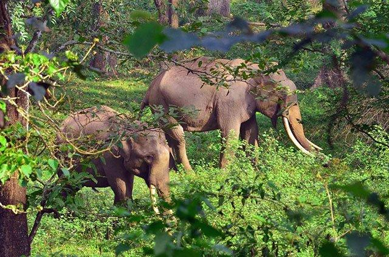

Edakkal Caves
Edakkal Caves are two natural caves at a remote location at Edakkal, 25 km (15.5 mi) from Kalpetta in the Wayanad district of Kerala in India's Western Ghats. They lie 1,200 m (3,900 ft) above sea level on Ambukutty Mala, near an ancient trade route connecting the high mountains of Mysore to the ports of the Malabar coast. Inside the caves are pictorial writings believed to date to at least 6,000 BCE,[1][2] from the Neolithic man, indicating the presence of a prehistoric civilization or settlement in this region.[3] The Stone Age carvings of Edakkal are rare and are the only known examples from South India.

Banasura Sagar Dam
Vanasura Sagar Dam, which impounds the Karamanathodu tributary of the Kabini River, is part of the Indian Banasurasagar Project consisting of a dam and a canal project started in 1979.The goal of the project is to support the Kakkayam Hydro electric power project and satisfy the demand for irrigation and drinking water in a region known to have water shortages in seasonal dry periods.
In the dam's reservoir there is a set of islands that were formed when the reservoir submerged the surrounding areas.The islands with the Banasura hills are in the background view.It is the largest earth dam in India and the second largest of its kind in Asia. The dam is made up of massive stacks of stones and boulders.
The dam has become a popular tourist destination. Many people visit the place to go trekking at the Banasura Hill & speed boating at Banasura Sagar Dam. The Banasura Hill Resort, located about 20 km from the dam was rated as Asia's largest Earthen Resort by BBC. Speed & pedal boats are available & are major hits with tourists. Speed boat ride, in particular, is an exhilarating experience & not to be missed.

Wayanad Wildlife Sanctuary
Muthanga and Tholpetty represent the two premier ecotourism centres in the Sanctuary. These venues are great ways of informing visitors over the importance of conservation. Eco-tourism sites promote the concept of responsibly travelling and partaking in the natural boons of the planet. This area is famous for frequent sightings of elephant, gaur, deer, monkey, tiger, leopard, bear and many species of reptiles, fishes, butterflies and birds.
This area is renowned with having world's largest recorded population of Asian Elephants and Tigers. Both of these species, along with the Vulture, are considered the flagship species of the Sanctuary. To this, we add Leopards, Jungle Cats, Leopard cats, spotted deer, Sambar deer, Gaur, Sloth bear, Wild dog, Wild boar, Indian pangolin, Stripe-necked mongoose and plethora of other mammals.